Content Authoring Application for the JET Interactive Music Engine
1 Introduction
1.1 Overview
This document contains the user guidelines for the SONiVOX JET Creator, an authoring application for creating and auditioning JET files. JET is an interactive music player for small embedded devices, including the those running the Android platform. It allows applications to include interactive music soundtracks, in MIDI format, that respond in real-time to game play events and user interaction.
JET works in conjunction with SONiVOX's
Embedded Audio Synthesizer (EAS) which is the MIDI
playback device for Android. Both the
JET and EAS engines are integrated into the Android embedded platform through the
JetPlayer class, as well
as inherent in the JET Creator application. As such, the JET content author can
be sure that the playback will sound exactly the same in both the JET Creator
and the final Android application playing back on Android mobile devices.
In addition to the graphical user interface, there are two main functionalities taking place in JET Creator. The first involves gathering all the source data (MIDI files and DLS file), adding JET's real-time attributes and building a JET (.jet) file that the Android application will use. The second functionality involves auditioning the interactive playback elements as they will take place in the Android application.
The JET Creator application is written in the Python programming language, therefore you need to have the current version of Python and WXWidgets installed. There is both a Mac and Windows version.
1.2 Abbreviations and Common Terms
It is important to use a common set of terms to minimize confusion. Since JET uses MIDI in a unique way, normal industry terms may not always suffice. Here is the definition of terms as they are used in this document and in the JET Creator application:
Channel: MIDI data associated with a specific MIDI channel. Standard MIDI allows for 16 channels of MIDI data each of which are typically associated with a specific instrument.
Controller: A MIDI event consisting of a channel number, controller number, and a controller value. The MIDI spec associates many controller numbers with specific functions, such as volume, expression, sustain pedal, etc. JET also uses controller events as a means of embedding special control information in a MIDI sequence to provide for audio synchronization.
DAW: Digital Audio Workstation. A common term for MIDI and audio sequencing applications such as Logic, SONAR, Cubase and others.
EAS: Embedded MIDI Synthesizer. The name of the SONiVOX MIDI synthesizer engine.
JET: Jet Interactive Engine. The name of the SONiVOX JET interactive music engine.
M/B/T: Measures, Beats and Ticks
Segment: A musical section such as a chorus or verse that is a component of the overall composition. In JET, a segment can be an entire MIDI file or a derived from a portion of a MIDI file.
SMF-0: Standard MIDI File Type 0, a MIDI file that contains a single track, but may be made up of multiple channels of MIDI data.
SMF-1: Standard MIDI File Type 1, a MIDI file that contains a one more tracks, and each track may in turn be made up of one or more channels of MIDI data. By convention, each channel is stored on a separate track in an SMF-1 file. However, it is possible to have multiple MIDI channels on a single track, or multiple tracks that contain data for the same MIDI channel.
Track: A single track in a DAW containing a timed sequence of events. Be careful not to confuse Tracks with Channels. A MIDI file may contain many tracks with several tracks utilizing the same MIDI channel.
2 The JET Interactive Music Concept
Interactive music can be defined as music that changes in real-time according to non-predictable events such as user interaction or game play events. In this way, interactive music is much more engaging as it has the ability to match the energy and mood of a game much closer than a pre-composed composition that never changes. In some applications and games, interactive music is central to the game play. Guitar Hero is one such popular game. When the end user successfully captures the musical notes coming down the fret board, the music adapts itself and simultaneously keeps score of successes and failures. JET allows for these types of music driven games as well.
There are several methods for making and controlling interactive music and JET is one such method. This section describes the features of JET and how they might be used in a game or software application. It also describes how JET can be used to save memory in small footprint devices such as Android enabled mobile handsets.
2.1.1 Data Compression
JET supports a flexible music format that can be used to create extended musical sequences with a minimal amount of data. A musical composition is broken up into segments that can be sequenced to create a longer piece. The sequencing can be fixed at the time the music file is authored, or it can be created dynamically under program control.
2.1.2 Linear Music Example
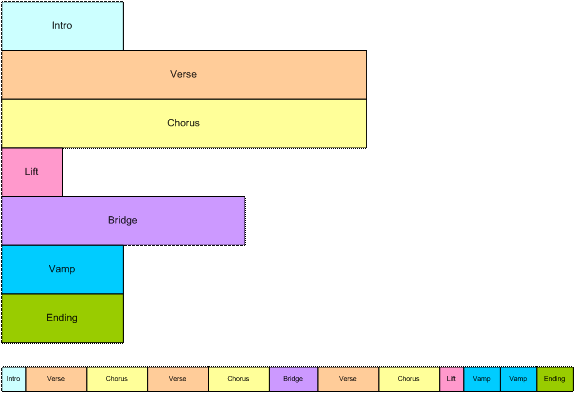
Figure 1: Linear Music Piece
This diagram shows how musical segments are stored. Each segment is authored as a separate MIDI file. A post-processing tool combines the files into a single container file. Each segment can contain alternate music tracks that can be muted or un-muted to create additional interest. An example might be a brass accent in the chorus that is played only the last time through. Also, segments can be transposed up or down.
The bottom part of the diagram shows how the musical segments can be recombined to create a linear music piece. In this example, the bridge might end with a half-step key modulation and the remaining segments could be transposed up a half-step to match.
2.1.3 Non-linear Music Example
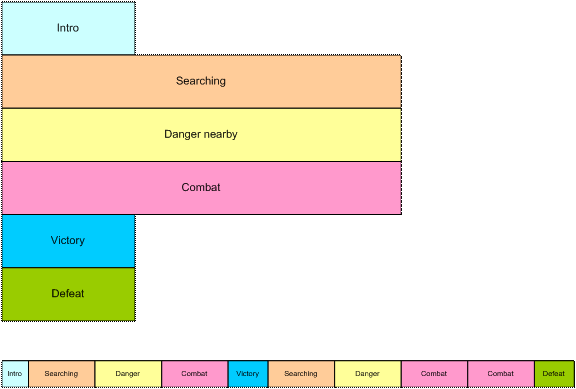
Figure 2: Non-linear music piece
In this diagram, we see a non-linear music piece. The scenario is a first-person-shooter (FPS) and JET is providing the background music. The intro plays as the level is loading and then transitions under program control to the Searching segment. This segment is repeated indefinitely, perhaps with small variations (using the mute/un-mute feature) until activity in the game dictates a change.
As the player nears a monster lair, the program starts a synchronized transition to the Danger segment, increasing the tension level in the audio. As the player draws closer to the lair, additional tracks are un-muted to increase the tension.
As the player enters into combat with the monster, the program starts a synchronized transition to the Combat segment. The segment repeats indefinitely as the combat continues. A Bonus Hit temporarily un-mutes a decorative track that notifies the player of a successful attack, and similarly, another track is temporarily un-muted to signify when the player receives Special Damage.
At the end of combat, the music transitions to a victory or defeat segment based on the outcome of battle.
2.1.4 Mute/Un-mute Synchronization
JET can also synchronize the muting and un-muting of tracks to events in the music. For example, in the FPS game, it would probably be desirable to place the musical events relating to bonuses and damage as close to the actual game event as possible. However, simply un-muting a track at the moment the game event occurs might result in a music clip starting in the middle. Alternatively, a clip could be started from the beginning, but then it wouldn't be synchronized with the other music tracks.
However, with the JET sync engine, a clip can be started at the next opportune moment and maintain synchronization. This can be accomplished by placing a number of short music clips on a decorative track. A MIDI event in the stream signifies the start of a clip and a second event signifies the end of a clip. When the application calls the JET clip function, the next clip in the track is allowed to play fully synchronized to the music. Optionally, the track can be automatically muted by a second MIDI event.
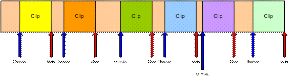
Figure 3: Synchronized Mute/Unmute
2.2 Audio Synchronization
JET provides an audio synchronization API that allows game play to be synchronized to events in the audio. The mechanism relies on data embedded in the MIDI file at the time the content is authored. When the JET engine senses an event during playback it generates a callback into the application program. The timing of the callback can be adjusted to compensate for any latency in the audio playback system so that audio and video can be synchronized. The diagram below shows an example of a simple music game that involves pressing the left and right arrows in time with the music.
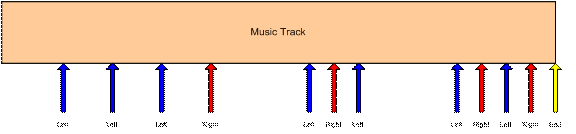
Figure 4: Music Game
The arrows represent events in the music sequence where game events need to be synchronized. In this case, the blue arrow represents a time where the player is supposed to press the left button, and the red arrow is for the right button. The yellow arrow tells the game engine that the sequence is complete. The player is allowed a certain time window before and after the event to press the appropriate key.
If an event is received and the player has not pressed a button, a timer is set to half the length of the window. If the player presses the button before the timer expires, the game registers a success, and if not, the game registers a failure.
If the player presses the button before the event is received, a timer is set to half the length of the window. If an event is received before the timer expires, the game registers a success, and if not, the game registers a failure. Game play might also include bonuses for getting close to the timing of the actual event.
3 JET Content Authoring Overview
To author JET files and hear them playback interactively, the content author will work in two applications which are designed to work together smoothly. The first is application is any off-the-shelf MIDI sequencing application that supports VST (for PC) or AU (for Mac) plugins. Here the author will compose their MIDI music files using the plugin as the synthesizer device. The second application is the JET Creator application. Here the author will import their MIDI music files (and optionally a DLS2 soundset) and setup the conditions for interactive playback within the JET enabled game. Optionally the content author may create a custom set of DLS instruments using an instrument editor that supports the DLS Level 2 format. One such application is Awave from MJSoft.
Please see the JET Content Authoring Guidelines documentation for additional details on content authoring.
4 Installing and Launching JET Creator
JET Creator is a python language application, therefore, you must have Python and wxPython installed on your machine.
JetCreator was created and tested with:
Python Version 2.5.4
wxPython Version 2.8.7.1
These can be downloaded here:
PC:
- http://www.python.org/download/releases/2.5.4/
- http://www.wxpython.org/download.php
MAC:
- http://wiki.python.org/moin/MacPython/Leopard
- http://www.wxpython.org/download.php
After installing Python and wxPython, simply unzip or copy all the files in the JET Creator application directory to a folder on your hard drive.
To launch JET Creator go to a command prompt and set the directory to where you've installed Python. Next run python with the command:
python jetcreator.py
5 Using JET Creator
5.1 File Types
There are a few different file types associated with JET Creator.
.jtc JET Creator project file. This file contains all the information associated with a JET Creator project. When you Save or Save-as out of JET Creator, this file type is saved.
.jet JET File. This output file is automatically generated from JET Creator whenever you save your JET Creator project. This is the file that bundles all JET assets together into a single file that the Android application will use. Give this file to the Android application developer.
.mid File. This is the standard MIDI type 1 file that JET Creator will use to make segments.
.seg Segment File. This is a JET Segment file. It has the same name as the MIDI file which it references but contains additional Segment information.
.zip Zip Archive file. When you Export a JET Archive, a zip file is created that contains all the assets (files) necessary for JET Creator. Use this to transfer JET Creator projects to other people.
5.2 Open Dialog
When you first launch JET Creator you are presented with an open dialog like the following.
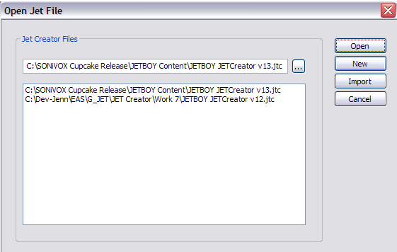
Open will open an existing .jtc (JET Creator file) file. Use the browser button to browse to the directory where you have saved your .jtc file.
New will create a new .jtc file.
Import will import a JET Archive (.zip) file.
Cancel will cancel the dialog and exit the application.
5 Main Window
The main window of the JET Creator application looks like the picture below. There are three main sections from top to bottom: segment view, event view, and timeline.
The segment view section displays a list of the current segments, which MIDI file and (optionally) DLS2 file each segment is derived from. It also shows each segments start and stop time and each segments quantize, transpose, repeat and mute flag settings.
Just below the Segment view is the event view. The event view section displays all events associated with a given segment. Events only display when the segment they are assigned to is highlighted. Each event displays its type, start and end points, track and midi channel assignment, and its event ID.
Just below the Event view is the timeline display. The timeline shows how many measures a given segment is as well as any events associated with that segment. The timeline changes to display the currently selected or playing segment. You can trigger an event in this window while the segment is play by simply clicking on the event in the timeline display.
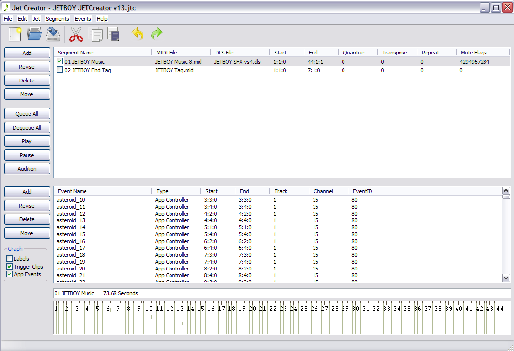
JET
Creator Main Window
The buttons along the left side of main window do the following:
Add: Displays the segment or event window for adding a new segment or event
Revise: Displays the segment or event window for updating an existing segment or event
Delete: Deletes the selected segment or event (will ask for confirmation)
Move: Displays the move window which allows you to move selected segments or events in time
Queue All: Queue's (selects) all segments for playback
Dequeue All: Dequeues (deselects) all segments
Play: Starts playback of all queued segments. This button changes to Stop if any segments are playing
Audition: Displays the Audition window (see below)
5.1 Segment Window
The segment window is where a given segment's attributes are assigned and auditioned, as shown in the picture below. The left side of the window displays the segments attributes that are stored in the JET file. The right side of the window allows the author to set mute flags, repeat and transpose settings and audition the segment as it will play in the JET game.
Note: the audition attributes (mute flags, repeat and transpose) are not stored in the JET content file (.jet) but rather are defined by the game or application itself. In programming language, these settings correspond directly with the API calls to the JET engine. By including them here, the JET content author can simulate how the segment will respond to the applications API commands during game play.
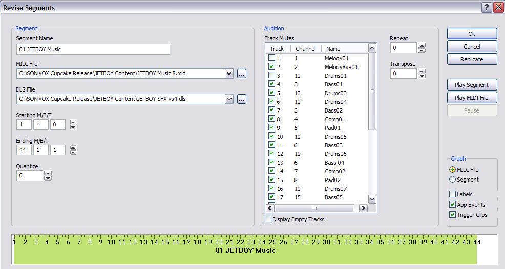
The segment parameters do the following:
- Segment Name - Sets the name of the segment
- MIDI File - The name and location of the MIDI file from which the segment is derived. The button to the immediate right will bring up a browser for locating a midi file on the hard drive.
- DLS File - The name and location of the DLS2 file, if any, that the MIDI file uses for that segment.
- Starting M/B/T - Starting measure, beat and tick of the segment
- Ending M/B/T - Ending measure, beat and tick of the segment
- Quantize - Quantize value for quantizing the current segment during playback
The audition fields are as follows:
- Track Mutes - Shows the MIDI tracks (not channels) in the MIDI file. Clicking on a track's checkbox will mute that track.
- Channel - Displays the MIDI channel assigned to each track
- Name - Displays the track name meta event (if present) for each track
- Repeat - Indicates the number of times a segment should repeat during playback
- Transpose - Indicates the transposition in semi-tones or half-steps a segment should transpose during playback
- To the right of the Audition window are a few additional buttons. These do as follows:
- OK - Selecting OK confirms all segment settings and closes the segment window
- Cancel - Selecting Cancel cancels any changes and closes the segment window
- Replicate - Displays the Replicate Segment window for entering multiple segments at once. See below.
- Play/Stop Segment - Starts or Stops playback of the segment using the segment attributes assigned.
- Play/Stop MIDI File - Starts or Stops playback of the MIDI file which the segment is assigned to.
- Pause/Resume - Pauses or Resumes playback.
5.2 Event Window
The event window is where a given segment's event attributes are assigned and auditioned, as shown in the picture below. To add an event to a segment, the author must first select the segment which will contain the event, then select the Add button. This will bring up the Event window.
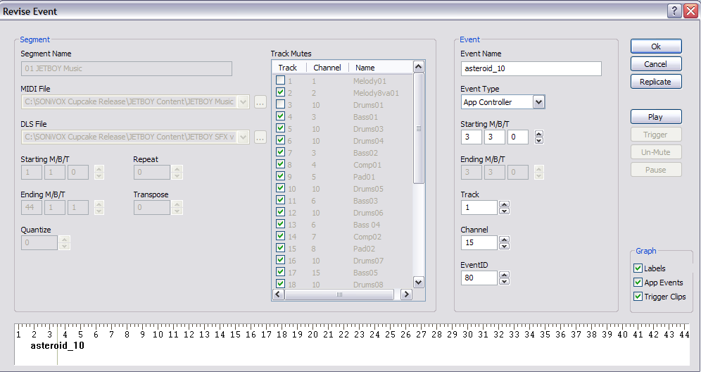
There are two main sections to the event window. The segment section on the left side of the event window is for display only. It shows what the segment attributes are for the given segment. The Event section, on the right side, is where events can be assigned. The following parameters are available:
Event Name - Assigns a name to an event
Event Type - Selects which type of event to assign.
Starting M/B/T - Sets the starting measure, beat, and tick for the event
Ending M/B/T - Sets the ending measure, beat, and tick for the event, if applicable
Track - Sets which track in the given segment the event will apply to
Channel - Sets which MIDI channel the event will apply to. The MIDI channel should match the MIDI channel of the track
Event ID - Sets the event ID for the event. Multiple events can be assigned to the same segment and therefore the Event ID is used to identify them
To the right of the Audition window are a few additional buttons. These do as follows:
OK - Selecting OK confirms all event settings and closes the event window
Cancel - Selecting Cancel cancels any changes and closes the event window
Replicate - Displays the Replicate Event window for entering multiple events at once. See below.
Play/Stop - Starts or Stops playback of the segment using the segment attributes assigned. While the segment is playing, events can be triggered and auditioned.
Trigger - Triggers the event assigned. This replicates the API command that the JET game will use to trigger the event, therefore giving the content author a method for auditioning the behaviour of the event.
Mute/UnMute - Mute/UnMute will mute or unmute the track that the event is assigned to
Pause/Resume - Pauses or Resumes playback.
To audition the behaviour of an event, you can select the Play button. This will initiate playback. The trigger button will send the trigger event when pressed. This is equivalent to selecting the green trigger event in the timeline.
Note: Trigger events are meant to unmute a single track of a segment when triggered, then mute that track at the end of the trigger segment. Therefore you should make sure the mute flag is set to mute the track that a trigger event will be unmuting when receiving a trigger event.
Please read Section 6 Under The Hood below for details on how trigger events work and behave.
5.3 Replicate Windows
Often in creating JET files, you'll need to create tens or even hundreds of events. You may also need to move events. The Replicate and Move windows allow for this. There are two Replicate windows for creating multiple segments or events. They look like the following:
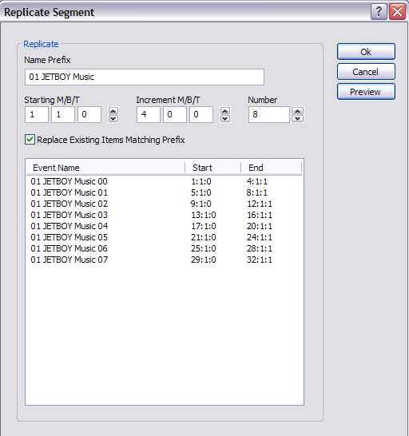
Replicate Segment Window
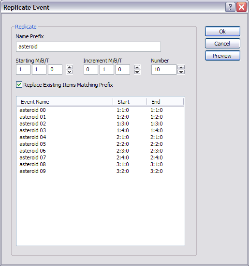
Replicate Event Window
Both Replicate windows function the same. After creating an initial segment or event, you can select the Replicate button. The parameters are as follows:
Name Prefix - Sets the prefix for the name of each segment or event created
Starting M/B/T - Sets the starting time for the first segment or event
Increment M/B/T - Sets the time between segments or events created.
Number - Sets the number of segments or events you wish to create. If the number overflows the length of the MIDI file (for segments) or segment (for events), those objects will not be created.
Preview - Preview allows you to examine the objects created before saying OK to insert them.
5.4 Move Windows
The Move function acts similarly to the Replicate function in that it allows you to edit multiple segments or events at one time, in this case move them in time. Like Replicate, there are two Move windows, one for Segments and one for Events. The windows look like the following:
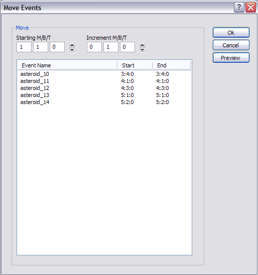
Move Event Window
To use Move, first select the segments or events you wish to move in time, then click the Move button. The parameters are as follows:
Starting M/B/T - Sets the starting time for the first segment or event
Increment M/B/T - Sets the time in M/B/T you wish to move the objects by.
Preview - Preview allows you to examine the objects created before saying OK to move them.
5.5 Audition Window
Clicking the Audition button in the main window of the JET Creator application will open the Audition window. This is where the content author or application programmer can simulate the interactive playback as it may occur in the mobile application or game itself.
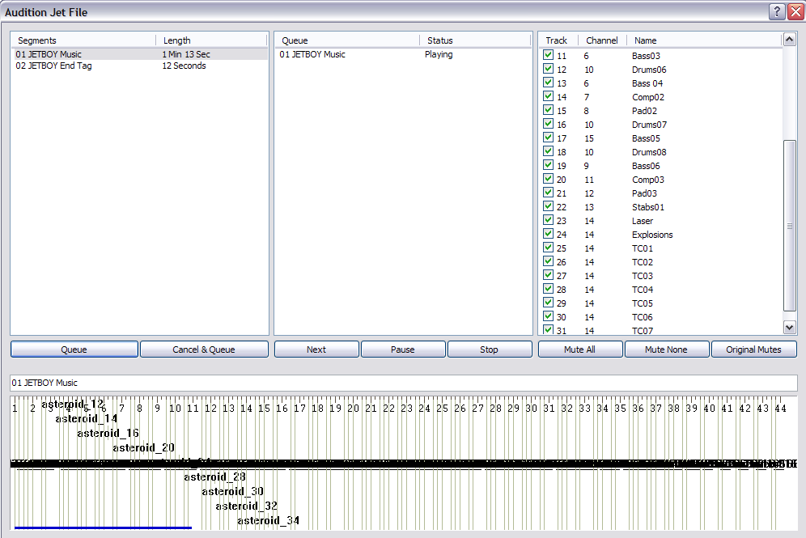
JET Audition Window
There are four main sections to the audition window. The left most section displays the available segments and their length in seconds. The middle section displays a running list of what segments are queued for playback and what their playback status is. The far right section displays the mute flags for the currently playing segment. The timeline section at the bottom is the same as in the main window. It displays the currently playing segment as well as a visual display of any event triggers associated with that segment.
The Audition window allows you to queue up any segment in any order for playback. To do this simply select the segment you wish to cue and hit Queue. That segment will appear in the queue window and start playing (if it is the first segment). Subsequently you can select any other segment or segments and cue them up for playback. As the segments complete playback, the next segment in the queue will begin playing. As is the other windows of JET Creator, you can mute, unmute, trigger event clips, etc. in realtime as each segment is playing back.
Specifically the buttons behave as follows:
Queue - loads the selected segment into the queue and starts playback
Cancel and Queue - cancels the currently playing segment before queueing the selected segment for playback
Cancel Current - cancels the currently playing segment in the queue and begins playback of the next segment
Stop - stops playback of all queued segments
Mute All - mutes all tracks in the current segment
Mute None - unmutes all tracks in the current segment
Original Mutes - sets the original mute flags for the current segment
The combination of these playback options allows an author or application programmer to audition any behaviour an interactive music application may encounter.
5.6 JET Creator Menus
The JET Creator menus provide access to many of the parameters in the main window plus a few additional parameters.
5.6.1 File Menu
The File Menu contains the following elements:
New - Creates a new JET Creator file (.jtc)
Open - Opens an existing JET Creator file
Save - Saves the currently opened JET Creator file
Save As - Saves the currently opened JET Creator file to a new file
Import Project - Imports a JET Creator archive (.zip)
Export Project - Exports a JET Creator archive (.zip)
Exit - Exits the application
5.6.2 Edit Menu
The Edit Menu contains the following elements:
Undo - Undo will undo the last edit made
Redo - Redo will redo the last undo
Cut - Copy selected parameter into clipboard and Delete selection
Copy - Copy selected parameter into clipboard and keep selection
Paste - Paste selected parameter
5.6.3 JET
The Edit Menu contains the following elements:
Properties - Brings up the JET Creator priorities window. This window allows you to set the following conditions for a given JET file:
Copyright Info - Contains copyright info to be inserted into JET file
Chase Controllers - Option to chase controllers (on/off). This should usually be ON.
Delete Empty Tracks - Deletes any empty MIDI tracks
5.6.4 Segments
The Segments Menu contains the following elements:
Add Segment - Brings up the Segment window
Update Segment - Updates segment attributes
Delete Segment - Deletes the current segment from the Segment List
5.6.5 Help
The Help Menu will contain at least the following elements:
JET Creator Help - will launch PDF help document or go to on-line help
About - JET Creator version number, SONiVOX info
6 Trigger Events Explained
Breaking a MIDI file into individual (non-linear) segments and queueing up those segments for playback in a game based on events within the game is one way JET music files are interactive. Trigger events are an additional method for interactive playback. Both would be used together in an interactive game or application.
Trigger events allow for the following:
- Tracks within a MIDI segment can be turned on or off based on game events. For example the composer could author two drum tracks, one fast and one slow. If the action in a game is fast, the fast drum track could play. If the action in the game is slow, the slow drum track can play.
- User actions can be compared to trigger events which are pre-inserted into a music file at musically correct places. Based on the results, scoring or other game actions can take place.
- Musical transitions between levels or action sequences can be synchronized to be musically seamless.
Under the hood, JET uses standard MIDI CC events to accomplish these actions and to synchronize audio. The controllers used by JET are among those not defined for specific use by the specification. The specific controller definitions are as follows:
Controllers 80-83 Reserved for use by application
Controller 102 JET event marker
Controller 103 JET clip marker
Controllers 104-119 Reserved for future use
6.1 JET Clip Marker (CC103)
Controller 103 is reserved for marking clips in a MIDI track that can be triggered by the JET_TriggerClip API call. The clip ID is encoded in the low 6 bits of the controller value. Bit 6 is set to one to indicate the start of a clip, and set to zero to indicate the end of a clip.
For example, to identify a clip with a clip ID of 1, the author inserts a MIDI controller event with controller=103 and value=65 at the start of the clip and another event with controller=103 and value=1 at the end of the clip. When the JET_TriggerClip() function is called with a clip ID of 1, the track will be un-muted when the controller value 65 is encountered and muted again when the controller value 1 is encountered.
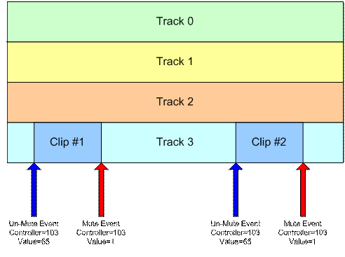
Figure 5: Synchronized Clip
In the figure above, if the JET_TriggerClip() function is called prior to the first controller event, Track 3 will be un-muted when the first controller event occurs, the first clip will play, and the track will be muted when the second controller event occurs. If the JET_TriggerClip() function is called after the first controller event has occurred, Track 3 will be un-muted when the third controller event occurs, the second clip will play, and the track will be muted again when the fourth controller event occurs.
Note: Normally, the track containing the clip is muted by the application when the segment is initially queued by the call to JET_QueueSegment(). If it is not muted, the clip will always play until Jet_TriggerClip() has been called with the clip ID.
6.2 JET Event Marker (CC102)
Controller 102 is reserved for marking events in the MIDI streams that are specific to JET functionality. Currently, the only defined value is 0, which marks the end of a segment for timing purposes.
Normally, JET starts playback of the next segment (or repeats the current segment) when the MIDI end-of-track meta-event is encountered. Some MIDI authoring tools make it difficult to place the end-of-track marker accurately, resulting in synchronization problems when segments are joined together.
To avoid this problem, the author can place a JET end-of-segment marker (controller=102, value=0) at the point where the segment is to be looped. When the end-of-segment marker is encountered, the next segment will be triggered, or if the current segment is looped, playback will resume at the start of the segment.
The end-of-segment marker can also be used to allow for completion of a musical figure beyond the end of measure that marks the start of the next segment. For example, the content author might create a 4-bar segment with a drum fill that ends on beat 1 of the 5th bar, a bar beyond the natural end of the segment. By placing an end-of-segment marker at the end of the 4th bar, the next segment will be triggered, but the drum fill will continue in parallel with the next segment providing musical continuity.
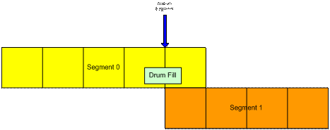
Figure 6: End-of-segment Marker
6.3 Application Controllers (CC80-83)
The application may use controllers in this range for its own purposes. When a controller in this range is encountered, the event is entered into an event queue that can be queried by the application. Some possible uses include synchronizing video events with audio and marking a point in a MIDI segment to queue up the next segment. The range of controllers monitored by the application can be modified by the application during initialization.
7 JET Creator Guidelines
7.1 Order of Tasks
As with all projects, its best to discuss and design the interactive music scheme with the game designer and programmer before beginning your composition. An outline and/or specification can go a long way in saving you from having to redo things after the game is in place.
In general you’ll want to first write your music in your DAW of choice the way you’re used to composing, then break up the final MIDI file as needed for the application. Next, move to JET Creator and create all of your music segments in the order easiest to preview them when played in order. Finally, add the JET Events to control the segments via the Android game and Audition them as needed in JET Creator. Finally, save the project in JET Creator and hand off the .jet file to the programmer to integrate it in the game. After previewing there will likely be changes to the MIDI file(s) and JET Creator attributes.
7.2 Conserving Memory
If you’re trying to conserve memory, compose as few MIDI files as possible, and create several segments from that MIDI file. For example a 12 bar MIDI file with three sections of 4 bars, A, B, C, can create a much longer song. Simply create multiple segments that reference the one MIDI file, then order them however you like. For example, A, A, B, A, C, A, B, A, A would create a 36 bar song. Use JET to add repeats, transpose segments, and interactively mute and unmute tracks to keep it even more interesting.
7.3 Replicate
To make adding segments or events faster, use the Replicate command. Replicate can add multiple segments or events at one time and uses an offset parameter and prefix naming convention to keep things easy to read. The MOVE command is also useful for moving multiple events by a set number of measures, beats or ticks.
7.4 Interactive Options
There are several interactive audio concepts possible in JET. Below are a few examples although we hope developers will come up with others we haven’t thought of! These are:
7.4.1 Multiple Segment Triggering
In this method the application is triggering specific segments based on events in the game. For example a hallway with lots of fighting might trigger segment 1 and a hallway with no fighting might trigger segment 2. Using JET TriggerClips in conjunction with this method creates even more diversity.
7.4.2 Mute Arrays
In this method the application is triggering mute and unmute events to specific tracks in a single MIDI sequence. For example a hallway with lots of fighting might play MIDI tracks 1-16 and a hallway with no fighting might play the same midi file but mute tracks 9-16. Using JET TriggerClips in conjunction with this method creates even more diversity.
7.4.3 Music Driven Gameplay
Music driven gaming is similar to what Guitar Hero and JETBOY have done in that the music content determines how graphic events are displayed. The application then queries the user response to the graphic events and interactively modifies the music in response. In this method the game is utilizing JET Application Events, MIDI controllers that are embedded in the MIDI file and read by the game in real-time. Based on the user response, multiple segment triggering and/or mute arrays can be set.